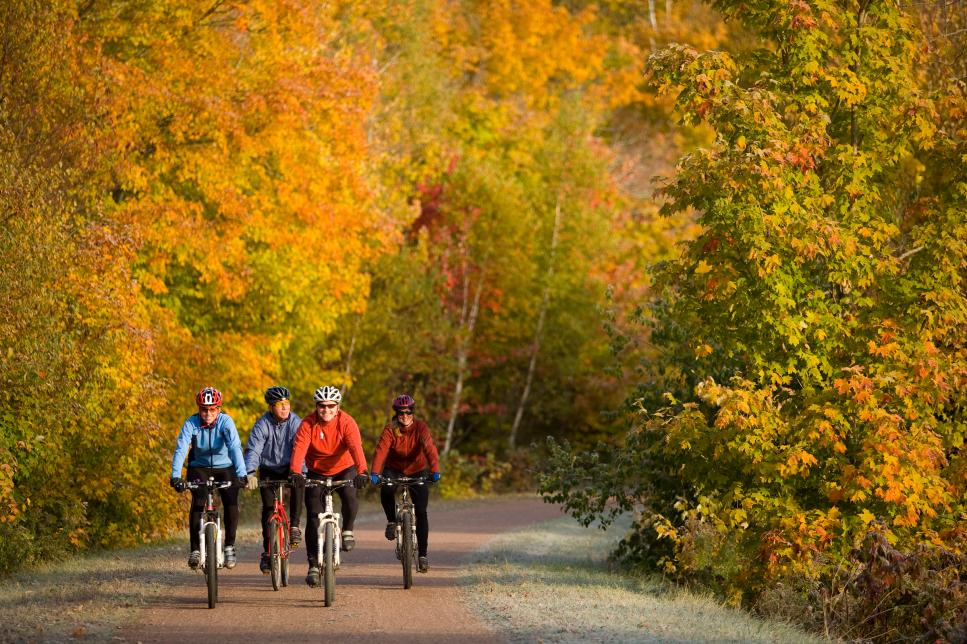

Sports
Here are some great sports to play in spring -
Softball
Ultimate Frisbee
Soccer
Baseball
Badminton
Biking


Spring, also known as springtime, is one of the four temperate seasons, succeeding winter and preceding summer. When it is spring in the Northern Hemisphere, it is autumn in the Southern Hemisphere and vice versa. In spring, days and nights are approximately twelve hours long, with daytime length increasing and nighttime length decreasing as the season progresses. Many flowering plants bloom at this time of year, in a long succession, sometimes beginning when snow is still on the ground and continuing into early summer. In normally snowless areas, spring may begin as early as February (Northern Hemisphere) or August (Southern Hemisphere), heralded by the blooming of deciduous magnolias, cherries, and quince.
Spring temperature averages range from a high of 69.9 degrees Fahrenheit (21.1 degrees Celsius) to a low of 24.7 °F (-4.1 °C). In spring the weather usually turns warmer, trees begin to grow their leaves, plants start to flower and young animals such as chicks and lambs are born. There is stronger sunlight, temperatures begin to rise, and the days grow longer. The weather can change a lot in spring. Spring is generally considered the period between the spring equinox and the summer solstice where farmers and garders plant their seeds.
In spring-summer, fabrics like cotton, eyelet, tropical wool and linen are the most commonly used for spring dresses as well as shorts or beach wear, these types of fabric soak sweat and allow the air to flow in the clothes for a fresher feeling on hot days. Spring's best colours are usually warm greens, yellows, orangey reds, flame scarlet, coral pink, very peachy pinks and every shade of light brown from tan to palest beige.
Spring is the perfect time to eat arugula, mushrooms, artichokes, asparagus, carrots, peas, spring onions, beets, radishes, lettuce and spinach. Its time for lemonade and buttermilk. Fruit tarts with, cherries, bananas , pineapple, apples, kiwis, apricots and grapefruit. Oats, pancakes, with sweet syrups like maple etc. Enjoy without hampering your health!
Here are some great sports to play in spring -